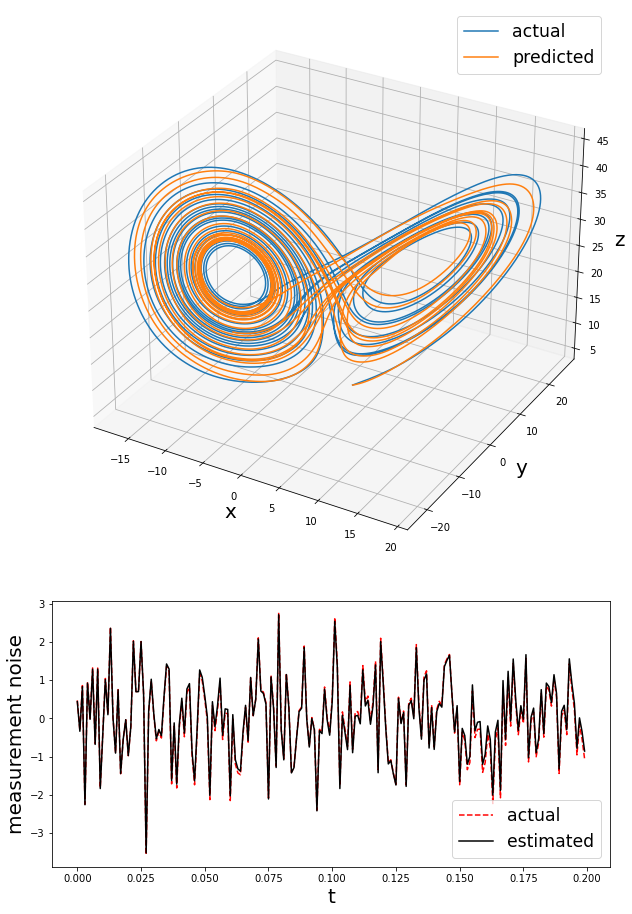

Software Implementation

Pole Vault Simulation
A simple model of a dynamic, bending pole with a point mass on the end. In the future it will carry a more complex object (like a person) to enable computational experiments.

Deep Learning Differential Equations
A Python module to create differential equations for time series data, where the equations take the form of artificial neural networks.
The figures on the left reproduce results for the Lorenz system from the paper https://doi.org/10.1016/j.jcp.2019.06.056 by Rudy, Kutz, & Brunton (2019). The learning process backpropagates through a Runge-Kutta solver and treats the data points as trainable weights, so that the system identification and noise removal work together.
The GitHub Repository includes a notebook to generate the figures. The module also works with Multistep Neural Networks (Raissi, Perdikaris, & Karniadakis, 2019) and Neural ODE (Chen, Rubanova, Bettencourt, & Duvenaud, 2019).
- github.com/nicholas-john/DeepDynamics
- Python, TensorFlow